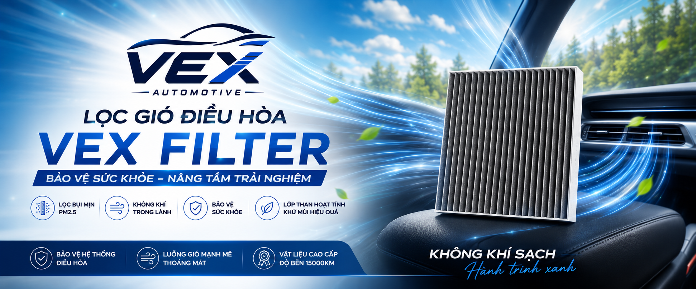
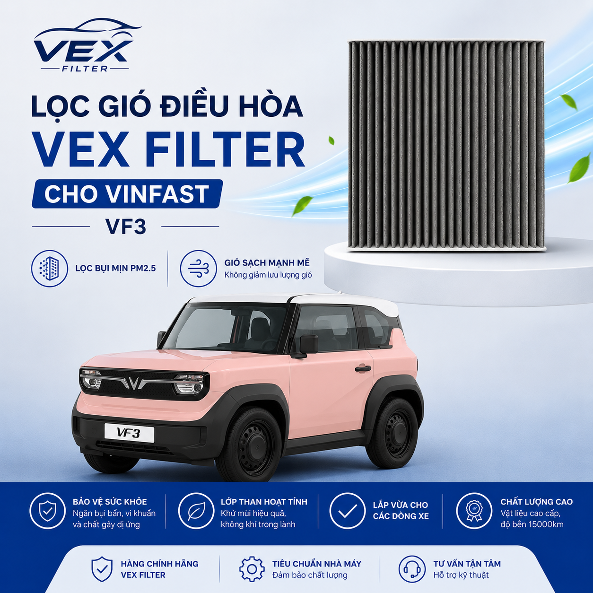
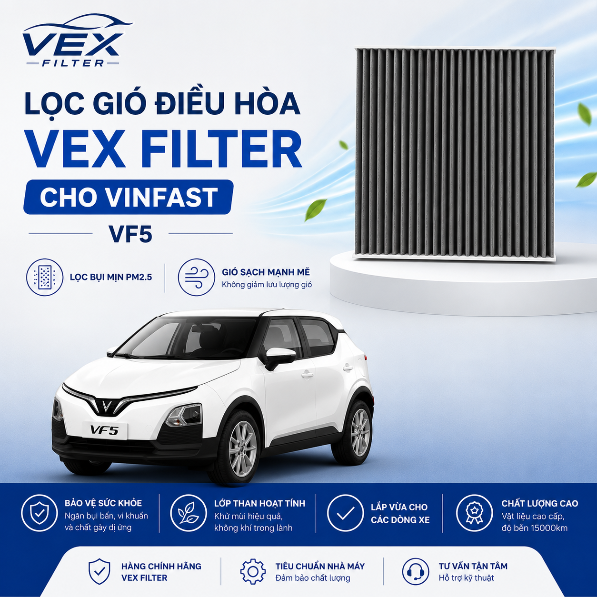
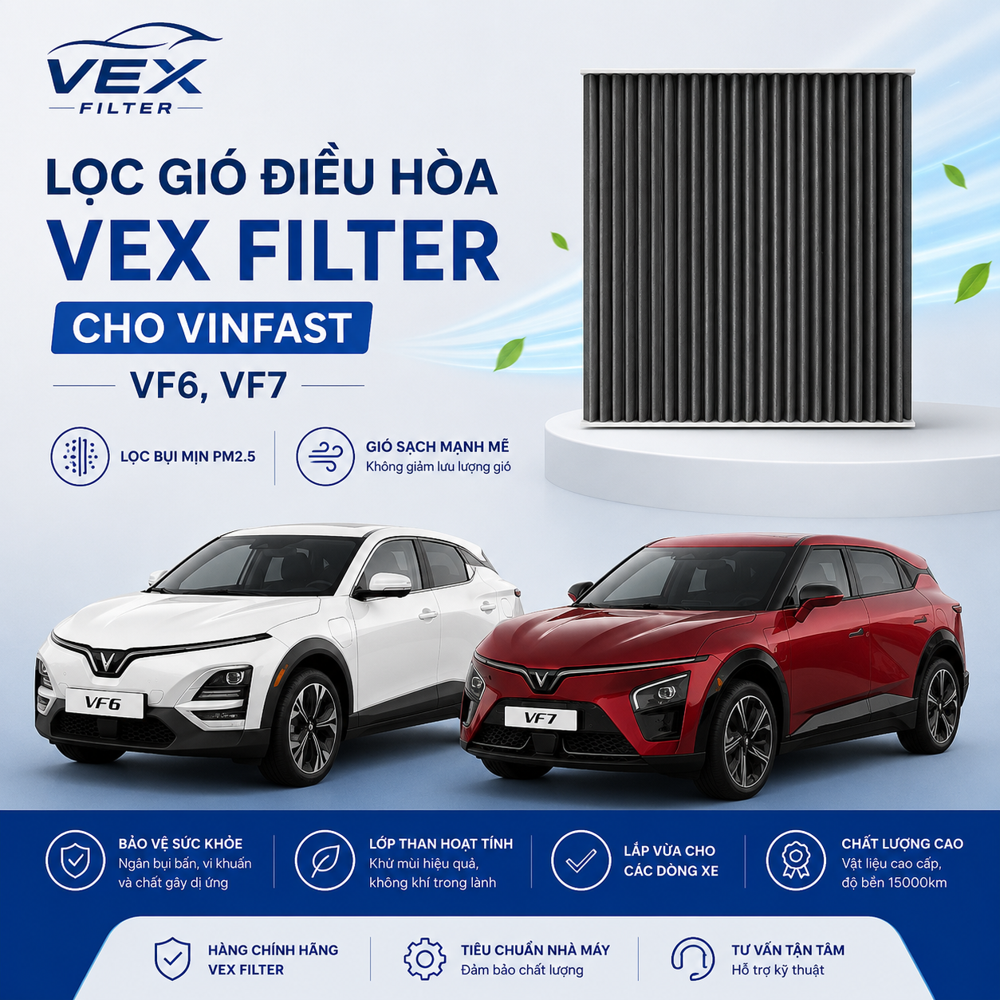
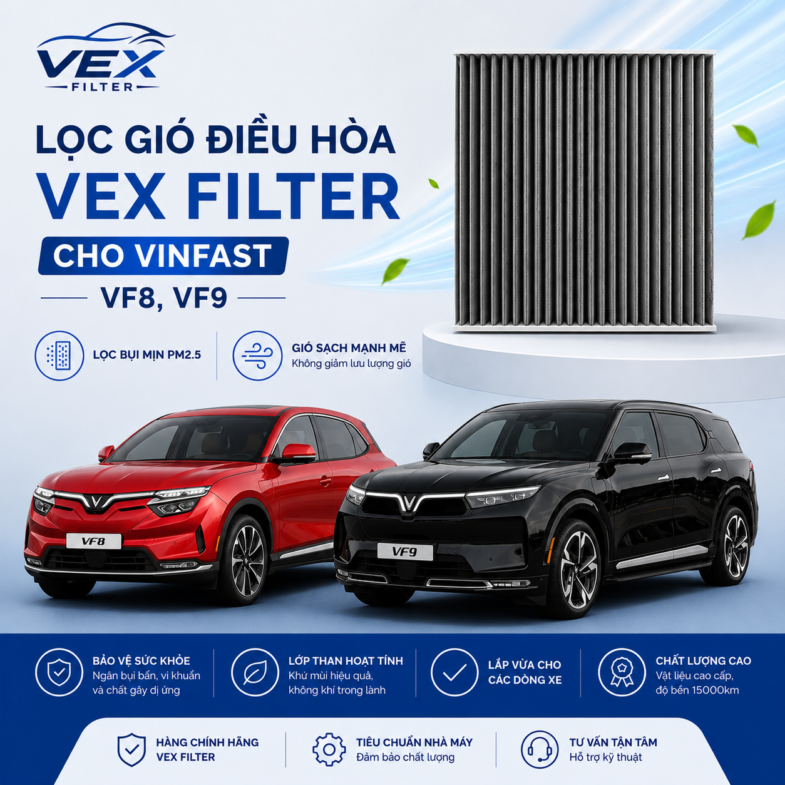
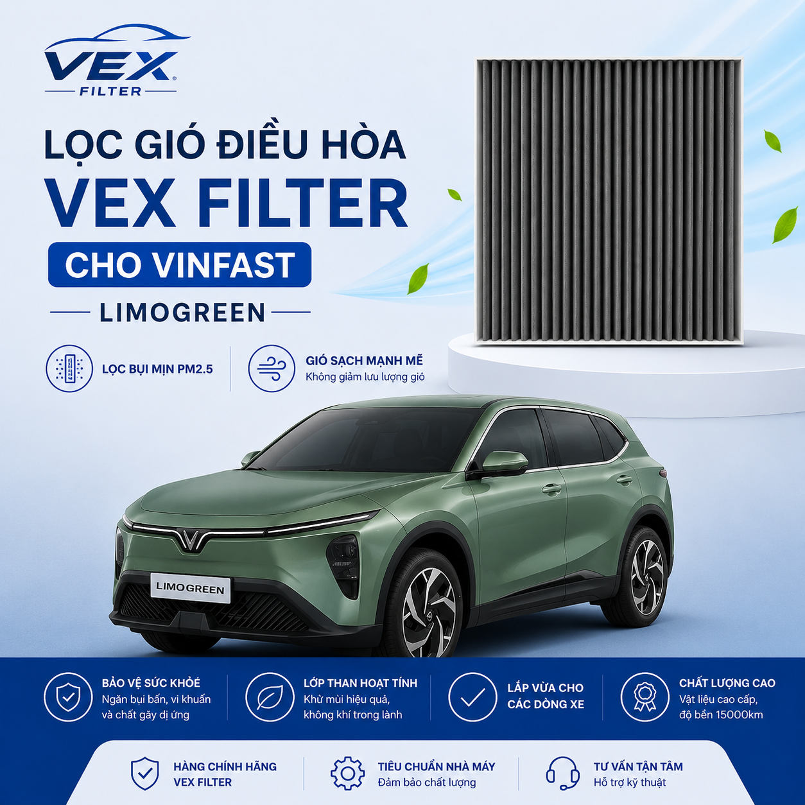
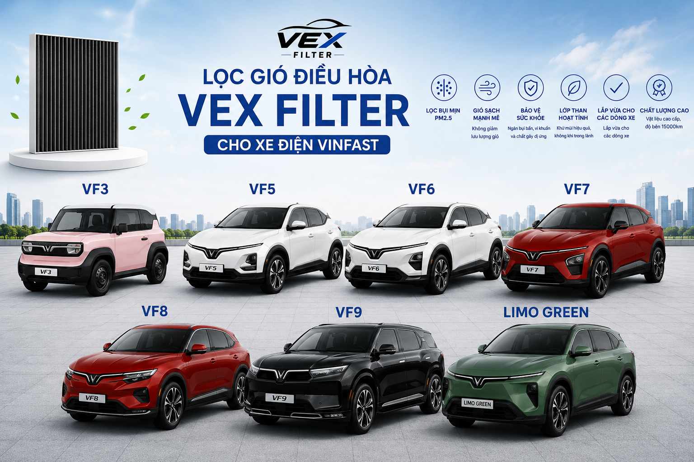
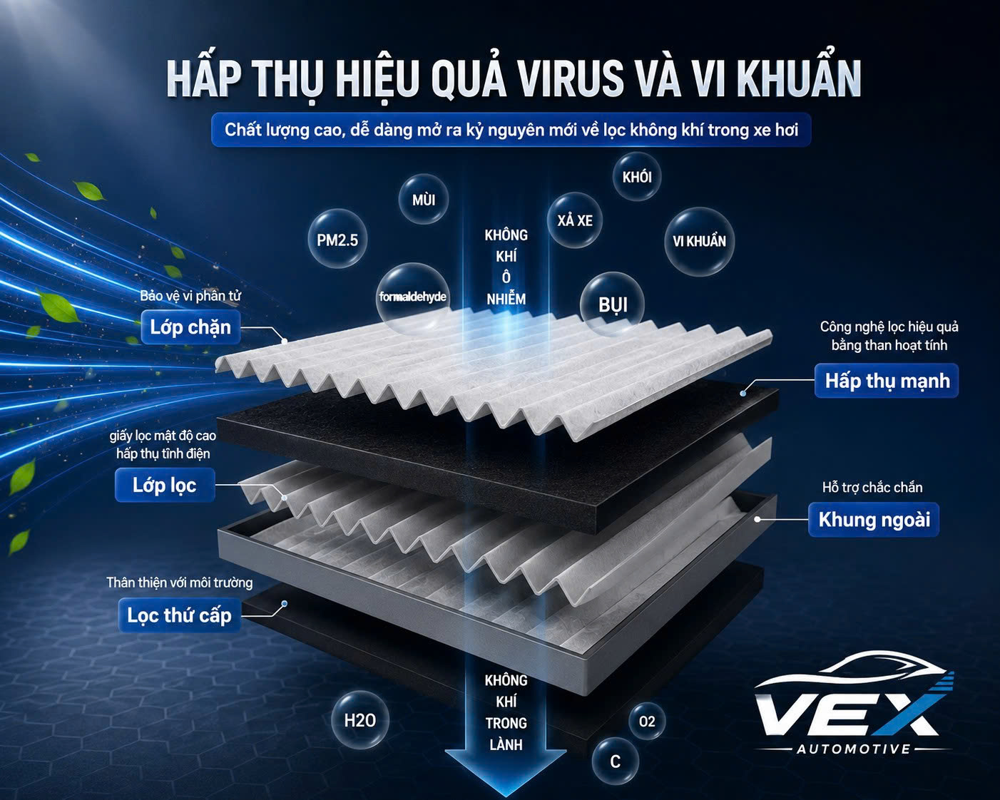
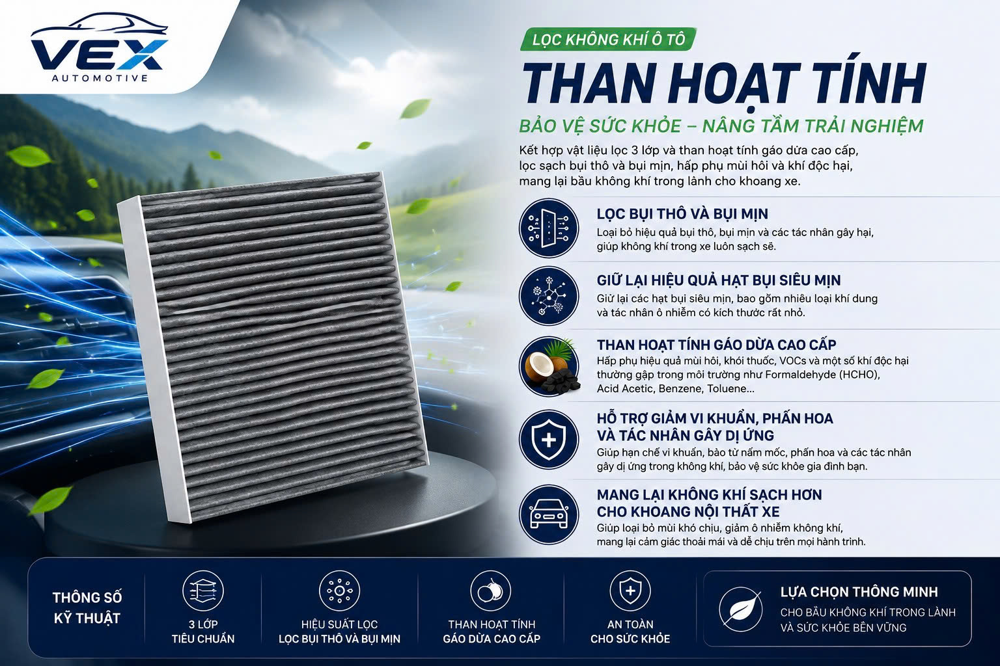
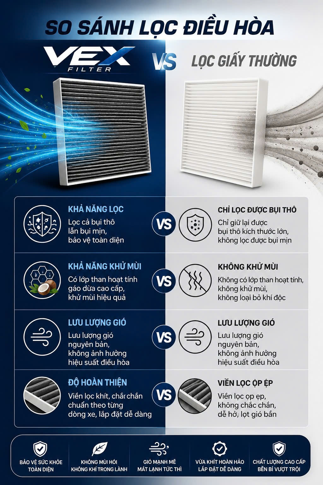

01
Không khí có mùi khó chịu
Lọc bẩn lâu ngày có thể tích tụ bụi, hơi ẩm và mùi trong hệ thống điều hòa.
Lọc gió điều hòa cao cấp VEX Filter được cấu tạo với 3 lớp lọc. Có khả năng lọc bụi mịn PM 2.5, bụi thô và khử mùi khó chịu trong xe. Được thiết kế để phù hợp với khí hậu Việt Nam, giữ lưu lượng gió nguyên bản, đảm bảo khả năng làm mát của điều hòa.

Sau hàng nghìn kilomet, lọc gió điều hòa tích tụ bụi bẩn, phấn hoa, nấm mốc và mùi hôi. Thay lọc định kỳ giúp điều hòa hoạt động hiệu quả hơn và mang lại bầu không khí dễ chịu cho cả gia đình.
Lọc bẩn lâu ngày có thể tích tụ bụi, hơi ẩm và mùi trong hệ thống điều hòa.
Bụi PM2.5, phấn hoa và bụi đường không thể nhìn thấy bằng mắt thường có thể theo luồng gió đi vào cabin.
Lọc quá bẩn hoặc kém chất lượng có thể cản trở lưu lượng gió, khiến điều hòa hoạt động kém hiệu quả.
Được thiết kế chuẩn kích thước, lắp vừa khít với từng dòng xe.

VF3
VF5
VF6 / VF7
VF8 / VF9
Limo Green

Chỉ vài thao tác đơn giản, khoảng 5 phút là xong — không cần ra gara nếu bạn tự tin.


Chọn lọc theo dòng VinFast của bạn. Nhắn shop để xác nhận size nếu cần.
Đang tải sản phẩm…
Hiệu quả bảo vệ sức khỏe khác biệt rõ rệt.

VEX Filter có đầy đủ kích thước cho các dòng xe hiện tại.
Nhắn tên xe, năm sản xuất — Shop sẽ tư vấn cụ thể.
Giao hàng toàn quốc. Kiểm tra mới thanh toán.
Dễ dàng lắp đặt tại nhà.
“Nhà có cháu nhỏ, hay bị hắt hơi khi bật lạnh. Đổi sang lọc than hoạt tính thấy mùi trong xe dễ chịu hẳn, gió cũng mạnh.”
“Lắp vừa VF8, không bị hở. Trước lọc zin dùng lâu mùi ẩm, giờ mở điều hòa thấy sảng khoái.”
“Mình hay chạy xa, cabin đông người. Lọc VEX khử mùi tốt, giá hợp lý, shop hướng dẫn thay rõ.”
Khuyến nghị khoảng 6–12 tháng hoặc ~15.000 km, tùy môi trường (bụi nhiều, điều hòa chạy nhiều thì thay sớm hơn). Nếu có mùi lạ hoặc gió yếu — nên kiểm tra ngay.
VEX Filter có đầy đủ kích thước phù hợp với hầu hết các dòng xe hiện tại ở thị trường Việt Nam.
Ai cũng có thể tự thay lọc gió điều hòa với chỉ vài thao tác đơn giản, 5 phút là xong.
Lọc của VEX Filter có cấu tạo tối ưu với khí hậu tại Việt Nam, có khả năng lọc bụi mịn PM2.5 đồng thời khử mùi khoang lái. Giá thành lại tiết kiệm hơn rất nhiều so với lọc gió thường trong hãng.
Khách hàng mua hàng trên các sàn thương mại điện tử sẽ theo chính sách vận chuyển của sàn. Khách hàng mua hàng ngoài các sàn thương mại điện tử sẽ được miễn phí ship tận nơi. VEX Filter hỗ trợ đổi trả trong 15 ngày đầu không cần lý do.
Gửi tên xe và năm sản xuất, VEX sẽ kiểm tra và tư vấn cho bạn. Hotline: 0983 047 842